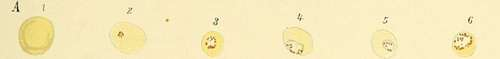
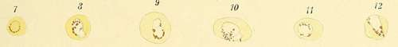
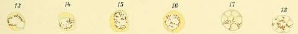
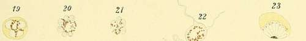
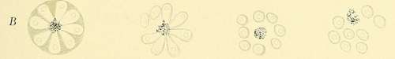
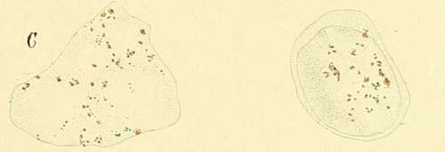

Special Characteristics Of The Individual Species Of Parasites.
Description
This section is from the book "Malaria, Influenza And Dengue", by Julius Mennaberg and O. Leichtenstern. Also available from Amazon: Malaria, influenza and dengue.
Special Characteristics Of The Individual Species Of Parasites.
We divide the malarial parasites as follows:
1. Malarial parasites that sporulate but do not form syzygies (i. e., crescents):
(a) Quartan parasites. (6) Tertian parasites.
2. Malarial parasites that sporulate and form syzygies (i. e., crescents) :
(a) Pigmented quotidian parasites.
(6) Non pigmented quotidian parasites.
(c) Malignant tertian parasites.f i. Malarial Parasites that Sporulate Without Forming Syzygies.-The course of development of the two species of parasites belonging to this group has been described by Golgi, and, omitting isolated details, we will not deviate from this description.
The Quartan Parasite
The quartan parasite (Plate IV) completes its development (from the spore to sporulation) in three times twenty four hours.
* This and the following sections are, with slight changes, taken from my monograph, "Die Malaria-Parasiten."
** Grassi and Feletti have proposed the following division:
1. Genus Hsemamceba-
Haemamoeba malarise. Haemamceba vivax. Haemamceba prsecox. Haemamceba immaculata.
2. Genus Laverania malarise.
Grassi and Feletti proceed on the assumption that crescents do not originate from all species of small parasites, but from only a definite species, the principal characteristic of which is that it does not sporulate, but instead forms crescents. Carrying out this assumption, they make two genera, Haemamaeba and Laverania. They place in the first the ordinary quartan and tertian parasites and the pigmented and non pigmented quotidian parasites. In the genus Laverania they put only one species, the Laverania malarise, consisting only of crescents and causing the mild, irregular fevers.
Grassi and Feletti explain the fact that the great majority of cases show crescents in addition to the small sporulating forms by declaring these cases to be mixed infections. I cannot accept this division of Grassi and Feletti, since I believe with Canalis and the Roman school that the small parasite may either sporulate or form crescents. Grassi and Feletti gave the following reasons for their opinion: 1. In six cases of severe pernicious fever they found five times Hsemamceba prsecox and Laverania; in one case, the Haemamceba prsecox alone. The first five they considered mixed infections, the last one, a pure infection.
2. In three cases of summer fever showing ameboid organisms (of undetermined character) and crescents they punctured the spleen at the beginning of the paroxysms many times (number not stated) and found only numerous crescents, but no sporulation forms, as should have been the case according to Marchiafava and Celli.
Description Of Plate IV
A. Figs. 1 to 22. Stages of development of the quartan parasite. Fig. 23. Rare sporulation form (after Canalis).
B. Schematic sporulation of quartan parasite (after Golgi).
C. Leukocytes containing melanin.
D. Various vacuolization of the erythrocytes.
PLATE IV.
In its young condition it appears as a non pigmented organism, looking like a small clear speck, on or in the infected blood corpuscle. It possesses a slow ameboid movement which is usually only visible on a warm stage.
The parasite remains at this stage of development twelve to twenty four hours, increasing only a little in size. A deposition of pigment then takes place in the outer layers of the parasite, consisting of quite large, dark lines and granules which show no movement. With increasing pigment formation the parasite loses the slight power of movement manifested in the beginning and appears as a spheric, completely immotile body, filling from one third to one half the red blood corpuscle. It has a sharp contour and its substance is quite refractive.
The parasite grows gradually and slowly, until finally, under normal circumstances, it reaches the size of the red blood corpuscle, when, especially in unstained preparations, nothing more of the red blood corpuscle is visible.
It now prepares itself for sporulation, in that the pigment granules clump themselves compactly in the center of the organism and a spoke like arrangement appears at the periphery of the plasma, which gradually extends to the center. These radial lines becoming gradually sharper, divide the parasite into a varying number of segments, usually not exceeding ten.
3. These cases without sporulation forms (that is, without Grassi and Feletti's Hsemamceba prsecox and immaculata) were never pernicious, but always mild.
Some of the arguments against their position are: 1. That on careful investigation crescents are found in association with the small parasites in so large a majority of cases that it is difficult to believe that they are all mixed infections. 2. That the crescents usually appear in the blood only some time after the beginning of the infection, which would indicate that they arise from the ameboid organisms originally present. 3. That a constant connection between the severity of the clinical course and the number of crescents does not exist. 4. That the number of crescents is, as a rule, so much smaller than that of ameboid organisms that we cannot regard them as obligate forms of development.
As far as I know, Livio Vincenzi was the only one who adopted the opinion of Grassi and Feletti, on account of observing several cases of estivoautumnal fever which showed only ameboid organisms and never crescents, though the observations were continued over months. Among these cases there were several of septan type.
According to my explanation of the origin of crescents, these isolated cases are easily explained by assuming a failure of double infection in the blood corpuscle, and, as a result, no possibility of copulation. Thayer and Hewetson divide the parasites as follows:
1. Parasites of tertian fever.
2. Parasites of quartan fever.
3. Parasites of estivoautumnal fever (Hsematozoon falciparum, Welch) From their experience they believe that the small parasites of estivoautumnal fever are not separable into different species. Van der Scheer divides them into two species, large and small parasites.
These lines broaden into grooves until finally the segments previously outlined become separated from one another as oval organisms (" daisy form," Golgi). In each of these a circumscribed, glistening speck usually appears which represents the nucleolus. This gives to the segments the character of independent organisms. The fully formed spores are now so closely connected with one another that pressure on the preparation may completely separate them; and even without this external violence the spores break apart, probably as a result of their growth and the rupture of the thin membrane surrounding them. This completes the life cycle of the parasite. The remaining clumps of pigment are carried away by the leukocytes as dead matter.
Continue to:
- prev: Position Of Malarial Parasites In Zoology
- Table of Contents
- next: Special Characteristics Of The Individual Species Of Parasites. . Part 2
Tags
mosquito, malaria, influenza, dengue, symptoms, outbreaks, diseases, hemoglobinuria, infections